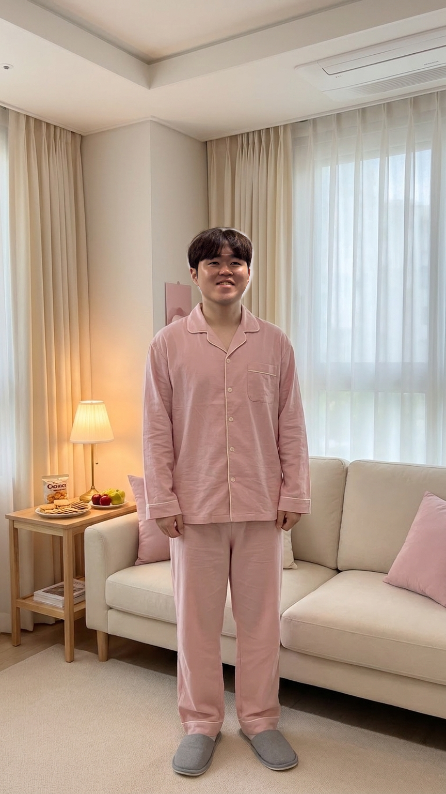

A LITTLE HOUSEWARMING STORY
우리 집에 놀러 올래?
집은 준비됐고, 이제 네가 올 차례.

첫 번째 장면 / 병규의 집
두근두근, 집들이 전날
뭐부터 물어볼까?
BAD ENDING
오지 않는 너를 기다리며
핑크빛 집들이는 그렇게 빛을 잃었다.HAPPY ENDING
그리고 그날의 웃음은 오래도록 반짝였다…병규는 우리의 영원한 스윗반장이 되었다…
다시 시작하겠습니까?
함께 만든 사람들
검토 및 제작: 쌍희
검토: 효경 앤 산
병규 오늘의 집주인
병규: 와줬구나…! 우리 집에 놀러 올래? 너 온다고 해서, 조금 신경 써봤어.
선택지를 눌러 이야기를 이어가세요
세 가지 질문을 모두 살펴보면 초대에 답할 수 있어요.